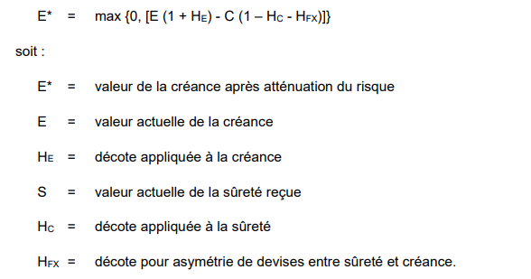
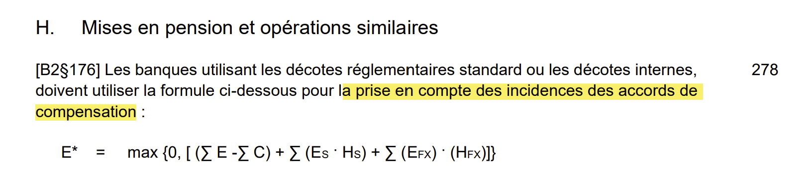

CRM - Capital Adequacy
Used in the following modules
- CRE
Legal references
- Finma circ. 2017/07 cm 191-278
- bcbs128 (Basel II Framework)
- OFR Art. 61
Description
- What is usually referred to as CRM (credit risk mitigation) is actually the 4th of the 4 possible allowed methods aimed at mitigating risk which are list below (OFR Art. 61 let. 1):
- Legal and contractual netting
- Guarantees
- Credit derivatives
- Other security → Collateralized transactions
- For this method (Collateralized transactions), two approaches are possible: the simple approach (cm 163-190) and the global approach (cm 191-278). We will describe the global approach here.
- Two formulas exists for different kind of positions:
- The first generic one (Finma circ. 2017/07 cm 204)
- The second for security financing transaction (SFTs) within a netting agreement (Finma circ. 2017/07 cm 278)
Formula of cm 204

* Where:
- E → core_positions_calc.Exposure of exposures. Computed as:
- Off-BS exposures (not derivatives): core_positions.BookAmount * core_positions_calc.CCF
- Off-BS exposures (derivatives): core_derivatives_calc.EAD
- On-BS exposures: core_positions.BookAmount - core_positions.Provision
- S → core_positions.BookAmount of collaterals
- E* → core_positions_calc.ExposureAfterCRM
- HE, HC → haircut applied on the securities. HE is applied on the exposure side and increases the effective exposure. HC is applied on the collateral side and decreases the value of the collateral.
- HFX → cross-currency mismatch haircut of 8%.
Recognizing positions entering the CRM
Exposures
- Include:
core_positions_calc.CAExposureFlag = 1core_positions.PledgedFlag = 1
- Exclude (to be treated with formula of cm 278):
core_positions.SubType in ('SL','SS') and core_positions.NettingSetId != ''
Collaterals
- Include:
core_positions_calc.CAEligibilityFlag = 1core_positions.PledgedFlag = 1
- Exclude (to be treated with formula of cm 278):
core_positions.SubType in ('SB','SP') and core_positions.NettingSetId != ''
Ordering for Exposures and Collaterals
- Suggestion: 2 passes, in pass apply the ordering bellow for exposures and colalterals
- First pass: exposures and collaterals in the same currency
- Second pass: exposure and collaterals in different currencies
Exposures
- Take first exposures with the highest value in field
core_positions_calc.CARiskWeight.
Collaterals
- Take collaterals in this order:
core_positions.SubType not in ('Guarantee','CDGuarantee','MortgageCertificate','MortgageContract')- Take first those with lower haircut →
core_positions_calc.RegulatoryHaircut
- Take first those with lower haircut →
core_positions.SubType in ('Guarantee','CDGuarantee')- Take first those with lower haircut →
core_positions_calc.RegulatoryHaircut
- Take first those with lower haircut →
core_positions.SubType not in ('MortgageCertificate','MortgageContract')
Formula cm 278

* Where:
- → absolute avec of the net exposure in a given security
- ↠ absolute value of the net exposure in any currency other than the agreed currency
- The agreed currency (settlement currency) for SLB is delivered in the master record in the field core_positions.Currency. The FX haircut is computed based on the difference between the currency of the security and this currency. For repurchase and reverse-repurchase agreement, the FX haircut is simply based on the difference between the currency of the cash and security record.
Recognizing positions entering the CRM
Exposures
- Include:
core_positions_calc.CAExposureFlag = 1core_positions.PledgedFlag = 1core_positions.SubType in ('SL','SS') and core_positions.NettingSetId != ''
Collaterals
- Include:
core_positions_calc.CAEligibilityFlag = 1core_positions.PledgedFlag = 1core_positions.SubType in ('SB','SP') and core_positions.NettingSetId != ''
Additional remarks
- The exposure haircut must be calculated as well as the collateral. The exposure haircut increases the exposure.
Remarks about exposures
- Exposures with a risk weighted assets (RWA) can arise from different sources.
- On-BS asset-side positions →
core_positions.LegalAccountNumber > 0 and core_positions.LegalAccountNumber < 200000 - Off-BS positions →
core_positions.LegalAccountNumber > 300000 and core_positions.LegalAccountNumber < 400000- Note that derivatives are not included here, because only the replacement values are delivered in
core_positions.
- Note that derivatives are not included here, because only the replacement values are delivered in
- Derivatives - counterparty credit risk →
core_positions.TypeOf = 'Contract' and core_positions.SubType in ('DerExc','DerOTC')- Note that the derivatives with a negative replacement value and an exposure will be on the liability side of the BS.
- Derivatives - issuer risk →
cp.TypeOf = 'Contract' and cp.SubType in ('DerOTC','DerExc') and cd.UnderlyingSecurityId != '' and cd.TypeOf != 'CDS'. - On-BS securities →
core_positions.LegalAccountNumber > 0 and core_positions.LegalAccountNumber < 300000 and core_positions.TypeOf = 'Security'- Securities enter a netting by issuer, where we end up taking the absolute value of the net position to compute the exposure which is then distributed back onto the underlying securities. It means that securities on the asset and liability side will receive an exposure.
- On-BS asset-side positions →
- Remarks:
- The exposures described under point 1, 2 and 3 will by default have the field
core_positions_calc.AExposureFlag = 1, which means they will be candidate to enter the CRM. It also include the asset-side securities of point 5 (not liability-side securities though). - The exposures described under point 1, 2, 3 and 5 have their exposure computed in
core_positions_calc.CAExposure, their risk weight incore_positions_calc.CARiskeWeightand their RWA incore_positions_calc.CARWA. - The exposures described under point 4 have their exposure computed under
core_positions_calc.CAIssuerExposure, their risk weight incore_positions_calc.CAIssuerRiskWeightand their RWA incore_positions_calc.CAIssuerRWA.
- The exposures described under point 1, 2 and 3 will by default have the field
| On-BS asset-side positions | Off-BS positions | Derivatives - counterparty credit risk | Derivatives - issuer risk | On-BS securities | |
|---|---|---|---|---|---|
| Filter | core_positions.LegalAccountNumber > 0 and core_positions.LegalAccountNumber < 200000 |
core_positions.LegalAccountNumber > 300000 and core_positions.LegalAccountNumber < 400000 |
core_positions.TypeOf = 'Contract' and core_positions.SubType in ('DerExc','DerOTC') |
cp.TypeOf = 'Contract' and cp.SubType in ('DerOTC','DerExc') and cd.UnderlyingSecurityId != '' and cd.TypeOf != 'CDS' |
core_positions.LegalAccountNumber > 0 and core_positions.LegalAccountNumber < 300000 and core_positions.TypeOf = 'Security' |
| Candidate to enter CRM | TRUE | TRUE | TRUE | FALSE | TRUE for asset-side securities, FALSE for liability-side securities |
| Exposure field | core_positions_calc.CAExposure |
core_positions_calc.CAExposure |
core_positions_calc.CAExposure |
core_positions_calc.CAIssuerExposure |
core_positions_calc.CAExposure and core_positions_calc.CAIssuerExposure |
| Risk weight field | core_positions_calc.CARiskeWeight |
core_positions_calc.CARiskeWeight |
core_positions_calc.CARiskeWeight |
core_positions_calc.CAIssuerRiskWeight |
core_positions_calc.CARiskeWeight |
| RWA field | core_positions_calc.CARWA |
core_positions_calc.CARWA |
core_positions_calc.CARWA |
core_positions_calc.CAIssuerRWA |
core_positions_calc.CARWA |
| ## Output fields | |||||
| ### core_positions_crm_ca | |||||
| * LoadId | |||||
| * CollateralId | |||||
| * ExposureId | |||||
| * AmountCovered | |||||
| * CollateralAmountUsed | |||||
| * FXHaircut | |||||
| * MaturityHaircut → Short term solution: set to 0 so far | |||||
| * AdaptedHaircut → Total haircut applied with adaptation. Short term solution: | |||||
| - If param AdaptedHaircutFlag = 1: | |||||
| - If param AdaptedHaircutFlag = 0: | |||||
| * RWA |